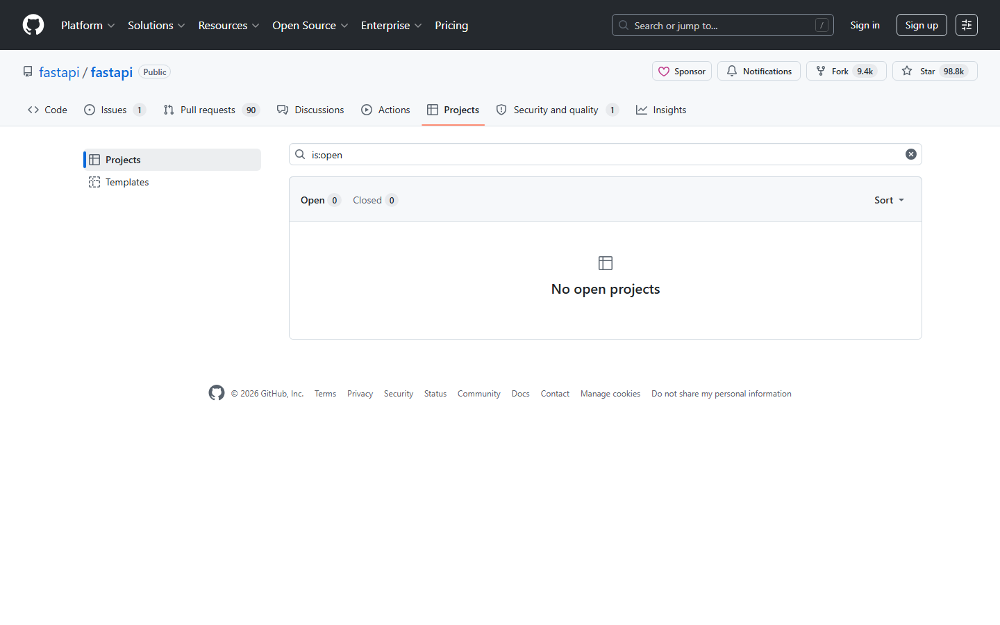

第十二课：项目管理（上）— Projects
时长：20 分钟 | 前置：第四课（Issue） | P0 词条：11 个 | 覆盖 UI 元素：14 个
学习目标
学完这节课，你能：
- 理解 GitHub Projects 是什么、解决什么问题
- 创建 Project 并切换 Board / Table / Roadmap 三种视图
- 在 Project 中添加 Issue 和 PR
- 使用自定义字段（Status、Priority 等）
- 设置自动化工作流
0. 开场（1 min）
画面：展示一个活跃的 GitHub Project 看板

旁白：
"Issue 多了就会乱。100 个 Issue，哪些在做、哪些已做完、哪些等着分派——光靠 Label 和 Milestone 不够直观。
Projects 就是 GitHub 内置的任务管理工具，类似 Trello / Jira。你可以把 Issue 拖来拖去，一眼看清项目进度。"
1. 什么是 Projects（2 min）
1.1 Projects 的三层结构
| 层级 |
说明 |
| Project |
一个项目，有独立的 URL |
| Views |
同一个 Project 可以有多个视图（Board / Table / Roadmap） |
| Items |
每个 Item 可以是一个 Issue、一个 PR、或者纯文本卡片 |
1.2 Projects 能做什么
| 功能 |
说明 |
| 把 Issue/PR 变成卡片 |
拖拽卡片改状态 |
| 自定义字段 |
Status、Priority、Effort、Date 等你自定义的字段 |
| 多视图 |
同一批数据，用看板、表格、路线图三种方式看 |
| 自动化 |
比如 "PR 合并后自动把卡片移到 Done" |
| 跨仓库 |
同一个 Project 可以关联多个仓库的 Issue |
2. 创建 Project（3 min）
画面：从仓库主页或组织页面进入
2.1 创建步骤
| 步骤 |
操作 |
| 1 |
点仓库顶部 Projects 标签（或个人头像菜单 → Your projects） |
| 2 |
点绿色 New project 按钮 |
| 3 |
选择模板：Board（看板）/ Table（表格）/ Roadmap（路线图） |
| 4 |
输入 Project name |
| 5 |
点 Create project |
2.2 Board 视图（看板）
| 元素 |
说明 |
| 列 |
默认三列：Todo / In Progress / Done |
| 卡片 |
每个 Issue 或 PR 显示为一张卡片 |
| 拖拽 |
拖动卡片换列（改变状态） |
| 点击卡片 |
打开 Issue/PR 详情页 |
操作演示：
【录屏】新建 Project → 选 Board → 展示默认三列
3. 添加 Items 到 Project（3 min）
3.1 多种添加方式
| 方式 |
操作 |
| 1. Project 内添加 |
点列底部的 + Add item → 输入标题创建新卡片 |
| 2. 粘贴 Issue/PR 链接 |
在 Add item 输入框粘贴链接 |
| 3. 搜索添加 |
输入 # 搜索已有 Issue → 选择 |
| 4. 从 Issue 页面添加 |
打开 Issue → 右侧 Projects → 搜索并选择 Project |
3.2 卡片信息
| 卡片上显示 |
说明 |
| 标题 |
Issue/PR 的标题 |
| 下方 Assignees 头像 |
指派给谁 |
| Labels 彩色标签 |
复制 Issue 的标签 |
| #编号 |
Issue/PR 编号 |
| 右下角 ... |
更多操作 |
4. 自定义字段（4 min）
4.1 添加自定义字段
| 步骤 |
操作 |
| 1 |
在 Project 右上角点 + New field |
| 2 |
选择字段类型 |
| 3 |
设置字段名和选项 |
4.2 字段类型
| 类型 |
英文 |
适合什么 |
示例 |
| Text |
Text |
短文本 |
备注 |
| Number |
Number |
数字 |
预估工时 |
| Date |
Date |
日期 |
截止日期 |
| Single select |
Single select |
单选下拉 |
Priority: P0 / P1 / P2 |
| Iteration |
Iteration |
迭代/冲刺 |
Sprint 1, Sprint 2 |
4.3 自定义 Status 字段
| 默认值 |
你可以改成 |
| Todo |
待处理 / Backlog |
| In Progress |
开发中 / Coding |
| Done |
已上线 / Released |
| — |
你可以加更多：Review / Testing / Blocked |
操作演示：
【录屏】+ New field → Single select → 创建 Priority → 设选项 P0/P1/P2 → 在卡片上选择 Priority
5. Table 视图（2 min）
画面：切换到 Table 视图
5.1 和 Board 的区别
|
Board |
Table |
| 显示方式 |
列（按 Status 分组） |
表格（像 Excel） |
| 适合场景 |
看状态流转 |
看详细数据 / 批量操作 |
| 优势 |
直观、可拖拽 |
可以按任意字段排序和筛选 |
5.2 Table 视图操作
| 操作 |
说明 |
| 列头点击 |
排序（按 Priority、Assignee、Date 等） |
| 列头右侧箭头 |
筛选（只显示 P0 的条目） |
| 拖拽列 |
调整列顺序 |
| 按 Tab 分组 |
按某个字段分组（如按 Assignee 分组） |
6. Roadmap 视图（1 min）
| 概念 |
说明 |
| 是什么 |
时间线视图，类似甘特图 |
| 需要什么字段 |
你的 Items 需要 Date 类型的字段（如 Start date、End date） |
| 适合场景 |
版本规划、多版本并行开发 |
| 怎么切换 |
Project 顶部标签切换 |
7. 自动化（Workflows）（3 min）
画面：Project 右上角 ... → Workflows
7.1 内置自动化规则
| 规则 |
作用 |
| Item added to project → Set Status to Todo |
新卡片自动设为 Todo |
| Pull request merged → Set Status to Done |
PR 合并后卡片自动移到 Done |
| Item closed → Set Status to Done |
Issue 关闭后卡片自动移到 Done |
| Item reopened → Set Status to In Progress |
Issue 重开后卡片回到开发中 |
| Auto-add to project |
当 Issue/PR 被添加特定 Label 时自动加入 Project |
7.2 怎么配置
| 步骤 |
操作 |
| 1 |
点右上角 ... → Workflows |
| 2 |
看到内置规则列表 |
| 3 |
点规则旁的开关 → 开启 |
| 4 |
可以自定义触发条件和动作 |
课后作业
- 在你的仓库里创建一个 Project（Board 视图）
- 添加 3 个 Issue 卡片到不同列，拖拽移动
- 创建自定义 Priority 字段（P0/P1/P2），给卡片选优先级
- 切换到 Table 视图 → 按 Status 分组
- 开启一个自动化规则："Issue closed → Status → Done"
本课术语速查
{.glossary-table}
| 英文 |
中文 |
出现位置 |
| Projects |
项目看板 |
顶部标签 |
| New project |
新建项目 |
绿色按钮 |
| Board |
看板视图 |
Project 三种视图 |
| Table |
表格视图 |
Project 三种视图 |
| Roadmap |
路线图视图 |
Project 三种视图 |
| Item |
条目 |
Project 中的每个卡片 |
| Field |
字段 |
自定义字段（Status/Priority等） |
| Todo / In Progress / Done |
待办/进行中/已完成 |
默认 Status |
| Iteration |
迭代/冲刺 |
字段类型之一 |
| Workflows (Automation) |
自动化 |
Project ... 菜单 |
| Backlog |
待办池 |
常见 Status 自定义 |